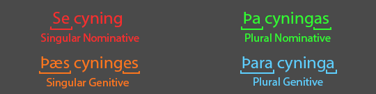

Old English Cases
A Note on Demonstrative Pronouns
You may have noticed that in the paradigm table for strong masculine nouns that the nouns were preceded by Se, Þa, Þara and Þæs. These are demonstratives and function in the same way as the modern English ‘the’.
| Demonstrative Pronouns | ||||
| Singular | Plural | |||
|---|---|---|---|---|
| Nominative | Se | þa | ||
| Genitive | þæs | þara | ||
A noun and all its modifiers, including demonstrative pronouns, always share the same case, gender and number. This is called ‘case harmony’ and means that demonstratives are a good way of figuring out the case a noun is in.

Using the same questions as before, try filling in the demonstrative pronouns that go with the nouns. Otherwise, continue on to the next topic.
Return to Nominative and Genitive Strong Nouns Continue to Accusative and Dative Masculine Nouns